일반기계기사 (2010-05-09 기출문제)
1과목: 재료역학
1. 밀도가 일정한 정육면체형 물체의 각 변의 길이가 처음의 3배로 되었을 때 이 정육면체의 바닥면에 발생되는 자중에 의한 수직 응력의 크기는 처음의 몇 배가 되겠는가?
- 1
- 3
- 9
- 27
(정답률: 27%)

2. 균일분포하중 ω를 받고 있는 길이가 L인 단순보의 처짐을 δ로 제한한다면 균일 분포하중의 크기는 어떻게 표현되겠는가? (단, 보의 단면은 폭이 b이고 높이가 h인 직사각형이고 탄성계수는 E이다.)
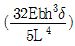
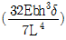
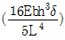
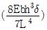
(정답률: 49%)
3. 코일 스프링의 소선의 지름을 d, 코일의 평균 지름을 D, 코일 전체 길이가 L인 경우 인장하중 W를 작용시킬 때 전체의 처짐량(δ)을 나타내는 식은? (단, G는 전단 탄성계수이고, n은 코일의 감김 수이다.)
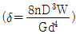
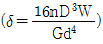
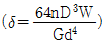
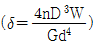
(정답률: 49%)
4. 아래 그림에서 모멘트의 최대값은 몇 kN·m인가?(단, B점은 고정이다.)
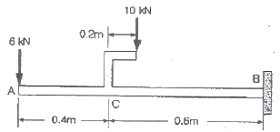
- 10
- 16
- 29
- 40
(정답률: 40%)
5. 길이가 2m인 환봉에 인장하중을 가하였더니 길이 변화량이 0.14cm였다. 이 때의 변화률은?
- 70×10-6
- 700×10-6
- 70
- 700
(정답률: 48%)
6. 지름 d인 원형단면 봉이 비틀림 모멘트 T를 받을 때, 발생되는 최대 전단응력 τ를 나타내는 식은? (단, Ip는 단면의 극단면 2차 모멘트이다.)
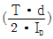
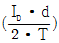
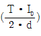
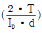
(정답률: 38%)
7. 그림과 같은 균일 원형단면을 갖는 양단 고정봉의 C점에 비틀림 모멘트 T=98N·m를 작용시킬 때, 하중점 (C점)에서의 비틀림 각은 몇 rad인가? (단, 전단탄성계수 G=78.4GPa, 극관성모멘트 Ip=600cm4이다.)
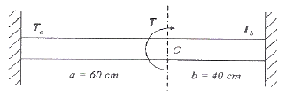
- 4×10-4
- 4×10-5
- 5×10-4
- 5×10-5
(정답률: 30%)
8. 내부 반지름 1.25m, 압력 1200kPa, 두께 10mm인 원형 단면의 실린더형 압력 용기에서의 축방향 응력 (σt:longitudinal stress)과 후프응력 (σz:circumferential stress)를 구하면?
- σt=75MPa, σz=150MPa
- σt=150MPa, σz=75MPa
- σt=37.5MPa, σz=75MPa
- σt=75MPa, σz=37.5MPa
(정답률: 25%)
9. 그림과 같은 복합 막대가 각각 단면적 AAB=100mm2, ABC=200mm2을 갖는 두 부분 AB와 BC로 되어있다. 막대가 100kN의 인장하중을 받을 때 총 신장량을 구하면 몇 mm인가? (단, 재료의 탄성계수(E)는 200GPa이다.)
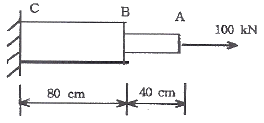
- 2
- 4
- 6
- 8
(정답률: 42%)
10. 그림과 같은 균일 단면의 돌출보(overlanging beam)에서 반력 RA는? (단, 보의 자중은 무시한다.)
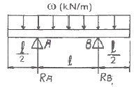
- ωℓ
- ωℓ/4
- ωℓ/3
- ωℓ/2
(정답률: 41%)
11. 어떤 재료의 탄성계수 E=210GPa이고 전단 탄성계수 G=83GPa이라면 이 재료의 포아송 비는? (단, 재료의 균일 및 균질하며, 선형 탄성거동을 한다.)
- 0.265
- 0.115
- 1.0
- 0.435
(정답률: 38%)
12. 탄성계수 E=200GPa, 좌굴음력 σB=320MPa인 강제 기둥에 오일러(Euler) 공식을 적용할 수 있는 한계 세장비는? (단, n은 양단지지 상태에 따른 좌굴 계수이다.)
- 62.5√n
- 78.5√n
- 85.5√n
- 90.5√n
(정답률: 38%)
13. 그림과 같이 균일 분포하중(ω)을 받는 균일 단면 외팔보의 자유단 B에서의 처짐량은? (단, 보의 굽힘 강성 EI는 일정하고, 자중은 무시한다)
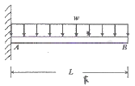
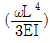
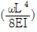
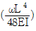
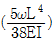
(정답률: 42%)
14. 지름 6mm인 곧은 강선을 지름 1.2m의 원통에 감았을 때 강선에 생기는 최대 굽힘 응력은 약 몇 MPa인가? (단, 탄성계수 E=200GPa이다.)
- 500
- 800
- 900
- 1000
(정답률: 20%)
15. 그림과 같은 보는 균일다면 부정정보이다. 반력 RB를 구하는데 필요한 조건은?
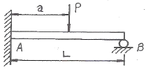
- 지점 B에서의 반력에 의한 처짐
- 지점 A에서의 굽힘모멘트의 방향
- 하중 작용점 P에서의 처짐
- 하중 작용점 P에서의 굽힘응력
(정답률: 36%)
16. 5cm×10cm 단면의 3개의 목재를 목재용 접착제로 접착하여 그림과 같은 10cm×15cm의 사각 단면을 갖는 합성보를 만들었다. 접착부에 발생하는 전단응력은 약 몇 kPa인가? (단, 이 보의 길이는 2m이고, 양단은 단순지지이며 중앙에 P=800N의 집중하중을 받는다.)
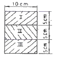
- 77.6
- 35.5
- 8
- 160
(정답률: 25%)
17. 다음 그림과 같이 단면적인 A인 강봉의 축선을 따라 하중 P가 작용할 때, 임의의 경사 평면에서 전단응력이 최대가 될 때의 면의 각(α)과 이 경우에 해당하는 전단응력 (τmax)은 얼마인가?
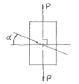
- α=45°. τmax=P/A
- α=45°. τmax=P/2A
- α=90°. τmax=P/A
- α=90°. τmax=P/2A
(정답률: 26%)
18. 그림과 같이 초기온도 20℃, 초기길이 19.95cm, 지름 5cm인 봉을 간격이 20cm인 두 벽면 사이에 넣고 봉의 온도를 220℃로 가열했을 때 봉에 발생되는 응력은 몇 MPa인가? (단, 균일 단면을 갖는 봉의 선팽창계수 a=1.2×10-5/℃이고, 탄성계수 E=210GPa이다.)
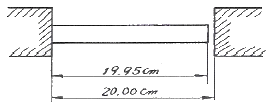
- 0
- 25.2
- 257
- 504
(정답률: 45%)
19. 내부 반지름 Ri, 외부 반지름 Ro인 속이 빈 원형 단면의 극(polar)관성 모멘트는?
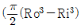
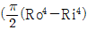
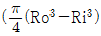
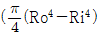
(정답률: 34%)
20. 그림에서 블록 A를 뽑아내는 데 필요한 힘 P는 몇 N 이상인가? (단, 블록과 접촉면과의 마찰 계수 μ=0.4이다.)
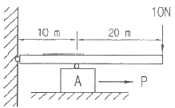
- 4
- 8
- 10
- 12
(정답률: 32%)
2과목: 기계열역학
21. 다음 T-S 선도에서 과정 1-2가 가역일 때 빗금 친 부분은 무엇을 나타내는가?
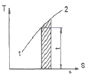
- 엔탈피
- 엔트로피
- 열량
- 일량
(정답률: 30%)
22. 다음 사항은 기계열역학에서 일과 열(熱)에 대한 설명이다 이 중 틀린 것은?
- 일과 열은 전달되는 에너지이지 열역학적 상태량은 아니다.
- 일의 기본단위는 J(joule)이다.
- 일(work)의 크기는 무게(힘)와 힘이 작용하여 이동한 거리를 곱한 값이다.
- 일과 열은 정함수이다.
(정답률: 39%)
23. 냉동시스템의 증발기(열교환기)에 냉매 R-134a가 온도 5℃, 엔탈피 380kJ/kg, 질량 유량 0.1kg/s로 유입되어 포화증기로 유출된다. 공기는 25℃로 유입되어 10℃로 나온다. 공기의 비령은 1.004kJ/kg·℃이다 증발기를 통과하는 공기의 질량 유량은?
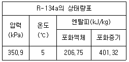
- 0.142 kg/s
- 0.270 kg/s
- 0.851 kg/s
- 1.15 kg/s
(정답률: 25%)
24. 비가역 단열변화에 있어서 엔트로피 변화량은 어떻게 되는가?
- 증가한다.
- 감소한다.
- 변화량은 없다.
- 증가할 수도 감소할 수도 있다.
(정답률: 33%)
25. 1kg의 기체가 압력 50kPa, 체적 2.5m3의 상태에서 압력 1.2MPa, 체적 0.2m3의 상태로 변하였다. 엔탈피의 변화량은 약 몇 kJ인가? (단, 내부에너지의 증가 U2-U1=0이다.)
- 306
- 206
- 155
- 115
(정답률: 49%)
26. 다음 열역학 성질(상태량)중 종량적 성질인 것은?
- 질량
- 온도
- 압력
- 비체적
(정답률: 41%)
27. 증기동력시스템에서 이상적인 사이클로 카르노사이글을 택하지 않고 팽킨사이클을 택한 주된 이유로 가장 적합한 것은?
- 이론적으로 카르노사이클을 구성하는 것이 불가능하다.
- 랭킨사이클의 효율이 동일한 작동 온도를 갖는 카르노사이클의 효율보다 높다.
- 수증기와 액체가 혼합된 습증기를 효율적으로 압축하는 펌프를 제작하는 것이 어렵다.
- 보일러에서 과열 과정을 정압 과정으로 가정하는 것이 타당하지 않다.
(정답률: 24%)
28. 다음 P-h 선도를 이용하여 증기압축 냉동기의 성능계수를 구하면 얼마인가?
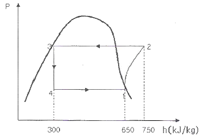
- 3.5
- 4.5
- 5.5
- 6.5
(정답률: 39%)
29. 피스톤-실린더 장치 안에 300kPa, 100℃의 이산화탄소 2kg이 들어있다. 이 가스를 PV1.2=constant인 관계를 만족하도록 피스톤 위에 추를 더해가며 온도가 200℃가 될 때까지 압축하였다. 이 과정 동안의 열전달량은 약 몇 kJ인가? (단, 이산화탄소의 정적비열(Cv)=0.653kJ/kg·K이고 정압비열(Cp)=0.842kJ/kg·K이며, 각각 일정하다.)
- -189
- -58
- -20
- 130
(정답률: 29%)
30. 증기터빈에서 증기의 상태변화로서 가장 이상적인 것은?
- 폴리트로픽 변화(n=1.3)
- 폴리트로픽 변화(n=1.5)
- 가역단열변화
- 비가역단열변화
(정답률: 42%)
31. 냉동용량이 35kW인 어느 냉동기의 성능계수가 4.8이라면 이 냉동기를 작동하는데 필요한 동력은?
- 약 9.2kW
- 약 8.3kW
- 약 7.3kW
- 약 6.5kW
(정답률: 43%)
32. 고열원과 저열원 사이에서 작동하는 카르노사이클 열기관이 있다. 이 열기관에서 60kJ의 일을 얻기 위하여 100kJ의 열을 공급하고 있다. 저 열원의 온도가 15℃라고 하면 고 열원의 온도는?
- 128℃
- 288℃
- 447℃
- 720℃
(정답률: 37%)
33. 온도가 350K인 공기의 절대압력이 0.3MPa, 체적이 0.3m3, 엔탈피가 100kJ이다. 이 공기의 내부에너지는?
- 1kJ
- 10kJ
- 15kJ
- 100kJ
(정답률: 39%)
34. 움직이고 있던 중량 5 ton의 차에 브레이크를 걸었더니 42.7m미끄러진 후에 완전히 정지하였다. 노면과 바퀴 사이의 마찰계수를 0.2라 하면, 제동 중에 발생된 열량은 약 몇 kJ인가?
- 49
- 419
- 837
- 17800
(정답률: 46%)
35. 다음 기체 중 기체상수가 가장 큰 것은?
- 수소
- 산소
- 공기
- 질소
(정답률: 46%)
36. 이상적인 시스템에 하루 2200kcal를 공급한다고 한다. 이 시스템에서 발생하는 평균 동력은 약 얼마인가? (단, 1kcal은 4180J이다.)
- 63W
- 88W
- 98W
- 106W
(정답률: 43%)
37. 정상상태 정상유동 과정의 팽창밸브가 있다. 입구에 액체가 유입되며, 이 과정을 스로틀로 간주할 수 있다. 입구상태를 1, 출구상태는 2로 각각 나타낼 때, 다음 중 어느 관계식이 가장 정확한가?
- U1=U2(내부에너지)
- h1=h2(엔탈피)
- s1=s2(엔트로피)
- v1=v2(비체적)
(정답률: 39%)
38. 포화증기를 단열 압축시키면 일반적으로 어떻게 되겠는가?
- 압력이 높아지고 습도가 증가한다.
- 압력은 높아지나 온도는 일정하다.
- 압력과 온도가 높아져 과열증기가 된다.
- 압력은 높아지나 온도는 낮아진다.
(정답률: 39%)
39. 물 10kg을 1기압 하에서 20℃로부터 60℃까지 가열할 때 엔트로피의 증가량은 약 몇 kJ/K인가? (단, 물의 정압비열은 4.18kJ/kg·K이다.)
- 9.78
- 5.35
- 8.32
- 41.8
(정답률: 35%)
40. 상태 1에서 상태 2로의 열역학 과정 중 운동에너지와 위치에너지의 변화를 무시할 때 일은
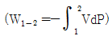
로 계산할 수 있는 경우는? (단, P는 압력, V는 체적이다.)- 가역 정상상태 정상유동 과정
- 비가역 정상상태 정상유동 과정
- 가역 밀폐 시스템의 과정
- 비가역 밀폐 시스템의 과정
(정답률: 23%)
3과목: 기계유체역학
41. 그림과 같이 단면적이 A인 관으로 밀도가 p인 비압축성 유체가 V의 유속으로 들어와 지름이 절반인 노즐로 분출되고 있다. 제트에 의해서 평판에 작용하는 힘은?
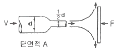
- pV2A
- 2pV2A
- 4pV2A
- 16pV2A
(정답률: 28%)
42. 실형의 1/25인 기하학적으로 상사한 모형 댐이 있다. 모형 댐의 상봉에서 유속이 1m/s일 때 실형의 대응점에서의 유속은 몇 m/s인가?
- 0.04
- 0.2
- 5
- 25
(정답률: 27%)
43. 일정 간격의 두 평판사이로 흐르는 완전 발달된 비압축성 정상유동에서 x는 유동방향, y는 직교방향의 좌표를 나타낼 때 압력강화와 마찰손실의 관계가 될 수 있는 것은? (단, P는 압력, τ는 전단응력, μ는 정성계수이다.
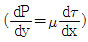
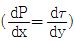
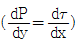
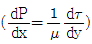
(정답률: 16%)
44. 직경이 10cm인 수평 원 관으로 3km 떨어진 곳에 원유(점성계수 μ=0.02Pa·s, 비중 s=0.86)를 0.2m3/min의 유량으로 수송하기 위해서 필요한 동력은 약 몇 W인가?
- 127
- 271
- 712
- 1270
(정답률: 29%)
45. 경계층의 속도분포가 u=10y(1+0.⑤y3)이고 y방향의 속도 성분 v=0일 때 벽면으로부터 수직거리 y=1m 지점에서의 와도(vorticity)는?
- -6s-1
- -10.5s-1
- -12s-1
- -24s-1
(정답률: 15%)
46. 경계층에 대한 설명으로 가장 적절한 것은?
- 점성유동 영역과 비점성 유동 영역의 경계를 이루는 층
- 층류영역과 난류영역의 경계를 이루는 층
- 정상유동과 비정상유동의 경계를 이루는 층
- 아음속 유동과 초음속 유동사이의 변화에 의하여 발생하는 층
(정답률: 26%)
47. 탱크 속의 액면이 점선의 위치에서 현 액면위치 D까지 서서히 내려왔다. 액면의 속도를 무시할 때 파이프 출구 C에서의 유출 속도 Vc는 약 몇 m/s인가? (단, 관에서의 마찰은 무시한다.)
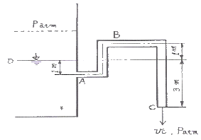
- 3.1
- 6.2
- 7.7
- 9.9
(정답률: 30%)
48. 펌프로 물을 양수할 때 흡입측에서의 압력이 진공 압력계로 75mmHg이다. 이 압력은 절대 압력으로 약 몇 kPa인가? (단, 수은의 비중은 13.6이고, 대기압은 760mmHg이다.)
- 91.3
- 10.0
- 100.0
- 9.1
(정답률: 27%)
49. 주철관을 통하여 유량 0.2m3/s로 기름을 운반하려 한다. 마찰계수는 0.019로 가정하고 관의 길이 1000m에서 손실수두가 8m로 되는 관의 지름 약 몇 cm인가?
- 3.8
- 7.6
- 38
- 76
(정답률: 28%)
50. 흐르는 물의 유속을 측정하기 위하여 삽입한 피토 정압관에 비중이 3인 액체를 사용하는 마노미터를 연결하여 측정한 결과 액주의 높이 차이가 10cm로 나타났다면 유속은 약 몇 m/s인가?
- 0.99
- 1.40
- 1.98
- 2.43
(정답률: 25%)
51. 지름 2cm인 수평 원관으로 점성계수가 1×10-3Pa·s인 물이 층류로 흐른다. 1m 흐를 때마다 100Pa의 압력강하가 일어난다면 유량은 몇 m3/s인가?
- 6.25×10-5
- 1.25×10-4
- 1.97×10-4
- 3.93×10-4
(정답률: 32%)
52. 5cm의 지름을 가진 구가 공기 속을 20m/s의 속도로 날고 있다. 이 때 항력은 몇 N인가? (단, 공기의 비중량은 12Nm3, 항력계수는 0.4이다.)
- 0.192
- 0.214
- 0.321
- 0.428
(정답률: 34%)
53. 관마찰계수가 거의 상대조도(relative roughness)에만 의존하는 경우는?
- 층류유동
- 임계유동
- 천이유동
- 완전난류유동
(정답률: 34%)
54. 직경이 30mm이고, 틈새가 0.2mm인 슬라이딩 베어링이 1800rpm으로 회전할 때 윤활유에 작용하는 전단응력은 약 몇 Pa인가? (단, 윤활유의 점성계수 μ=0.38N·s/m2이다.)
- 5372
- 8550
- 10744
- 17100
(정답률: 29%)
55. 그림과 같이 입구속도 Uo의 비압축성 유체의 유동이 평판 위를 지나 출구에서의 속도분포가
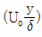
가 된다 검사체적을 ABCD로 취한다면 단면 CD를 통과하는 유량은? (단, 그림에서 검사체적의 두께는 δ, 평판의 폭은 b이다.)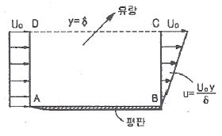
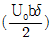
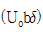
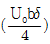
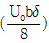
(정답률: 17%)
56. 지름의 비가 1:2인 2개의 모세관을 물 속에 수직으로 세울 때 모세관현상으로 물이 관속으로 올라가는 높이의 비는?
- 1 : 4
- 1 : 2
- 2 : 1
- 4 : 1
(정답률: 29%)
57. 표면장력의 차원으로 맞는 것은? (단, M : 질량, L : 길이, T : 시간)
- MLT-2
- ML2T-1
- ML-1T-2
- MT-2
(정답률: 32%)
58. 밀폐된 탱크 내의 비중이 0.9인 오일이 들어 있고 윗부분의 공간에 절대압력 5000Pa인 공기가 차 있다. 공기와 오일의 경계면에서 2m 아래의 절대 압력은 약 몇 kPa인가? (단, 물의 비중량은 9790N/m3이다.)
- 1.7
- 6.7
- 17.6
- 22.6
(정답률: 28%)
59. 밀도 p, 중력가속도 g, 유속 V, 힘 F에서 얻을 수 있는 무차원수는?
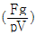
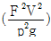
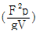
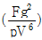
(정답률: 25%)
60. 정상 유동(steady flow)은 어떤 유동인가? (단, P, V는 임의 점의 압력, 속도이다.)
 인 유동
인 유동 인 유동
인 유동- 유동장 내의 임의 점에서 흐름의 특성이 시간에 따라 변하지 않는 유동
- 유동자 내에서 속도가 균일한 유동
(정답률: 36%)
4과목: 기계재료 및 유압기기
61. 다음 중 서브제로(sub-Zero) 처리에 대한 설명으로 틀린 것은?
- 잔류오스테나이트를 마텐자이트화 한다.
- 공구강의 경도증가와 성능을 향상시킨다.
- 스테인리스강에는 우수한 기계적 성질을 부여한다.
- 충격값을 증가시키고 시효에 의한 치수변화가 생긴다.
(정답률: 51%)
62. 다음 주강품에 대한 설명 중 틀린 것은?
- 주조한 것은 내부응력이 있다.
- 주조 후는 일반적으로 풀림(Annealing)을 한다
- 평균 주조 수축율은 약 2%이다.
- 중탄소 주강은 0.1∼0.2%C 범위이다.
(정답률: 36%)
63. 게이지강이 갖주어야 할 조건으로 틀린 것은?
- 내마모성이 크고, HRC55 이상의 경도를 가질 것
- 담금질에 의한 변형 및 균열이 적을 것
- 오랜 시간 경과하여도 치수의 변화가 적을 것
- 열팽창계수는 구리와 유사하며 취성이 좋을 것
(정답률: 57%)
64. 다음 중 스프링 가의 기호를 나타내는 것은?
- SCM4
- SNCM8
- SPS9
- STS3
(정답률: 57%)
65. 주조할 때 주물표면을 금속형 등으로 급냉하여 백선화 시켜서 경도를 높이고 내마모성, 내압성을 향상시킨 주철은?
- 구상흑연주철
- 칠드주철
- 가단주철
- 규소주철
(정답률: 49%)
66. 쾌삭강(Free cutting steel)에 절삭속도를 크게 하기 위하여 첨가하는 주된 원소는?
- Ni
- Mn
- W
- S
(정답률: 45%)
67. Fe-Fe3C 평형 상태도의 723℃(A1)에서 일어나는 변태로부터 나타나는 조직은?
- 마텐자이트
- 오스테나이트
- 펄라이트
- 베이나이트
(정답률: 36%)
68. 다음 중 가단주철을 설명한 것으로 가장 적합한 것은?
- 기계적 특성과 내식성, 내열성을 향상시키기 위해 Mn, Si, Ni, Cr, Mo, V, Al, Cu 등의 합금원소를 첨가한 것이다.
- 탄소량 2.5% 이상의 주철을 주형에 주입한 그 상태로 흑연을 구상화한 것이다.
- 표면을 칠(chill)상에서 경화시키고 내부조직은 펄라이트와 흑연인 회주철로 해서 전체적으로 인성을 확보한 것이다.
- 백주철을 고온도로 장시간 풀림해서 시멘타이트를 분해 또는 감소시키고 인성이나 연성을 증가시킨 것이다.
(정답률: 46%)
69. 40∼50% Ni을 함유한 합금이며, 전기저항이 크고 저항온도 계수가 작으므로 전기저항선이나 열전쌍의 재료로 많이 쓰이는 Ni-Cu 합금은?
- 엘린바
- 라우탈
- 콘스탄탄
- 인바
(정답률: 46%)
70. 탄소강을 풀림(Annealing)하는 목적과 관계없는 것은?
- 결정입조 조절
- 상온가공에서 생긴 내부응력 제거
- 오스테나이트에서 탄소를 유리시킴
- 재료에 취성과 경도부여
(정답률: 42%)
71. 베인펌프의 특징에 해당하지 않는 것은?
- 송출압력의 맥동이 적다.
- 고장이 적고 보수가 용이하다.
- 압력 저하가 적어도 최고 토출 압력이 210kgf/cm2 이상 높게 설정할 수 있다.
- 펌프의 유동력에 비하여 형상치수가 적다.
(정답률: 43%)
72. 수개의 볼트에 의하여 조임이 분할되기 때문에 조임이 용이하여 대형관의 이음에 편리한 관이음 방식은?
- 나사 이음
- 플랜지 이음
- 플레어 이음
- 바이트형 이음
(정답률: 58%)
73. 그림과 같은 실린더를 사용하여 F=3kN의 힘을 발생시키는데 최소한 몇 MPa의 유압(P)이 필요한가? (단, 실린더의 내경은 45mm이다.)
- 1.89
- 2.14
- 3.88
- 4.14
(정답률: 49%)
74. 슬라이드 밸브 등에서 밸브가 중립점에 있을 때, 이미 포트가 열리고 유체가 흐르도록 중복된 상태를 의미하는 용어는?
- 제로 랩
- 오버 랩
- 언더 랩
- 랜드 랩
(정답률: 32%)
75. 그림과 같은 기호의 명칭으로 옳은 것은?
- 시퀀스 밸브
- 카운터 밸런스 밸브
- 일정비율 감압 밸브
- 무부하 밸브
(정답률: 43%)
76. 유입관로의 유량이 25L/min 일 때 내경이 10.9mm라면 관내 유속은 약 몇 m/s인가?
- 4.47
- 14.62
- 6.32
- 10.27
(정답률: 52%)
77. 그림의 유압 회로는 펌프 출구 직후에 릴리프 밸브를 설치하여 최대압력을 제한하려는 것이다 이에 맞는 회로의 명칭은?
- 카운터 밸런스 회로
- 압력설정회로
- 시퀀스 회로
- 감압회로
(정답률: 49%)
78. 유압기기에서 실(seal)의 요구 조건과 관계가 먼 것은?
- 압축 복원성이 좋고 압축변형이 적을 것
- 체적변화가 적고 내약품성이 양호할 것
- 마찰저항이 크고 온도에 민감할 것
- 내구성 및 내마모성이 우수할 것
(정답률: 62%)
79. 카운터 밸런스 밸브에 관한 설명 중 맞는 것은?
- 두 개 이상의 분기 회로를 가질 때 각 유압 실린더를 일정한 순서로 순차 작동시킨다.
- 유압 실린더가 중력에 의하여 자유 낙하하는 것을 방지해 준다.
- 회로 내의 최고 압력을 설정해 준다.
- 펌프를 무부하 운전시켜 동력을 절감시킨다.
(정답률: 55%)
80. 유압유의 점도가 낮을 때 유압 장치에 미치는 영향에 대한 설명으로 거리가 먼 것은?
- 내부 및 외부의 기름 누출 증대
- 마모의 증대와 압력 유지 곤란
- 펌프의 용적 효율 저하
- 기계 효율의 저하(동력 손실 증가)
(정답률: 53%)
5과목: 기계제작법 및 기계동력학
81. 원동 연삭작업에서 연삭 숫돌의 원주속도 v=1800m/min, 연삭력 147.15N, 연삭효율이 η=80% 일 때 연삭동력은 몇 kW인가?
- 1.47
- 3.68
- 5.52
- 7.36
(정답률: 38%)
82. 일명 장호 용접이라 하며, 입상의 미세한 용제를 용접부에 산포하고 그 속에 전극 와이어를 연속적으로 공급하여 용제 속에서 모재와 와이어 사이에 아크를 발생시켜 용접하는 것은?
- 서브머지드 아크 용접
- 불활성 가스 아크 용접
- 원자 수소 용접
- 프로젝션 용접
(정답률: 52%)
83. 공작물을 신속히 교환할 수 있도록 되어 있으며 고정력이 작용력에 비해 매우 큰 클램프는?
- 쐐기형 클램프
- 캠 클램프
- 토글 클램프
- 나사 클램프
(정답률: 39%)
84. 방전기공(Electro Discharge Machining)에 의한 금속, 비금속가공시 전극재료의 구비조건이 아닌 것은?
- 기계가공이 쉬울 것
- 전극소모량이 많을 것
- 가공 정밀도가 높을 것
- 구하기 쉽고 값이 저렴할 것
(정답률: 52%)
85. 두께 1.5mm인 연질 탄소강판에 지름 4mm의 구멍을 펀칭할 때 전단력은 약 몇 N인가? (단, 전단 저항력 τ=300[N/mm2]이다.)
- 2365
- 3465
- 4755
- 5655
(정답률: 39%)
86. 절삭온도를 측정하는 방법으로 틀린 것은?
- 칩의 색에 의한 방법
- 시온도료에 의한 방법
- 열전대에 의한 방법
- 공구공력계를 사용하는 방법
(정답률: 45%)
87. 판재가 5mm 이상인 보일러에서 리벳 이음을 한 후 리벳머리를 때려서 기밀 유지하도록 하는 작업은?
- 코킹(caulking)
- 패킹(packing)
- 척킹(chucking)
- 피팅(fitting)
(정답률: 36%)
88. 침탄법에 비하여 경화층은 얇으나, 경도가 크다. 담금질이 필요 없고, 내식성 및 내마모성이 크나, 처리시간이 길고 생산비가 많이 드는 표면경화법은?
- 마퀜칭
- 화염 경화법
- 고주파 경화법
- 질화법
(정답률: 54%)
89. 잔형(Loose piece)에 대한 설명으로 맞는 것은?
- 제품과 동일한 형상으로 만드는 목형
- 목형을 뽑기 곤란한 부분만을 별도로 조립된 주형을 만들고 주형을 빼낼 때에는 분리해서 빼내는 형
- 속이 빈 중공(中空) 주물을 제작할 때 사용하는 목형
- 제품의 수량이 적고 형상이 클 때 주요부의 골격만 만들어 주는 것
(정답률: 45%)
90. 금속재료를 회전하는 룰러(Roller) 사이에 넣어 가압함으로써 단면적을 감소시켜 길이 방향으로 늘리는 작업은?
- 압연
- 압출
- 인발
- 단조
(정답률: 50%)
91. 반경이 0.25m인 원판이 지면 위를 미끄럼 없이 구르고 있을 때 원판 중심의 속도는 1.5m/s, 가속도는 2.5m/s2이다. 원판의 꼭대기에 있는 점의 속도는 몇 m/s인가?
- 0.75
- 1.5
- 3.0
- 4.5
(정답률: 22%)
92. 도르래와 모터를 이용하여 무게가 mg인 물체를 그림과 같이 끌어올리고자 한다. 도르래의 질량은 무시할 수 있을 정도로 작다. 모터가 줄을 v의 속도 및 a의 가속도로 그림과 같이 끌어 올릴 때 모터에 의해 전달되는 일률은?
(정답률: 17%)
93. 두 질점의 완전소성충돌에 대한 설명 중 틀린 것은?
- 반발계수가 영이다.
- 두 질점의 전체에너지가 보존된다.
- 두 질점의 전체운동량이 보존된다.
- 충돌 후, 두 질점의 속도는 서로 같다.
(정답률: 19%)
94. 그림에 나타난 반경 0.125m인 실린더는 두 개의 움직이는 판 D와 E 사이에서 미끄럼 없이 구른다. 실린더 중심 C의 속도와 방향은? (단, 위 판의 속도는 0.25m/s(→)이고 아래 판의 속도는 0.4m/s(←)이다.)
- 0.075 m/s (←)
- 0.075 m/s (→)
- 0.15 m/s (←)
- 0.15 m/s (→)
(정답률: 12%)
95. 가속도계로 어떤 진동체의 최대 가속도를 측정하였더니 중력가속도의 80배였다. 이 때 진동체의 주파수가 20Hz 였다면 진동체의 진폭은 약 몇 cm인가?
- 3
- 5
- 7
- 9
(정답률: 28%)
96. 길이 1.0m, 질량 10kg의 막대가 A점에 핀으로 연결되어 정지하고 있다. 1kg의 공이 수평속도 10m/s로 막대의 중심을 때릴 때, 충돌 직후의 막대의 각속도를 구하면? (단, 공과 막대 사이의 반발계수는 0.4이다.)
- 1.95rad/s, 반시계방향
- 0.86rad/s, 반시계방향
- 0.68rad/s, 반시계방향
- 0.86rad/s, 시계방향
(정답률: 9%)
97. 중량이 42N, 스프링 상수가 28N/cm, 감쇠계수(c)가 0.3N·s/cm일 때 이 계의 감쇠비(ζ)는 얼마인가?
- 0.323
- 0.215
- 0.137
- 0.174
(정답률: 33%)
98. 고유 주기 T가 1s인 단진자의 길이는 약 몇 cm인가?
- 20
- 25
- 30
- 35
(정답률: 24%)
99. 무게 1kN의 기계가 스프링상수 k=50kN/m인 스프링 위에 지지되어 있다. 크기가 50N인 조화 가진력이 기계에 작용하고 있다면 공진 진동수와 공진 진폭은 얼마인가? (단, 점성 감쇠계수 c=6kN·s/m이다.)
- 1.5Hz, 0.019cm
- 1.5Hz, 0.038cm
- 3.5Hz, 0.019cm
- 3.5Hz, 0.038cm
(정답률: 11%)
100. 인공위성이 반경이 R인 지구 주위를 0.1R의 고도를 유지하며 원형궤도를 돌기 위한 속도 V는?
(정답률: 20%)